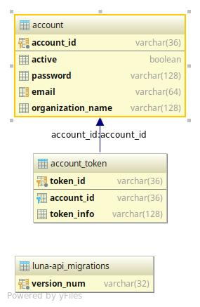

PostgreSQL DB model¶
DB scheme.¶
This module describes database structure
-
class
luna_api.db.models.Account(**kwargs)[source]¶ Database table model for account.
-
account_id¶ uuid4: account id.
-
active¶ bool: account status (blocked or not).
-
email¶ str: account email.
-
fillAccount(tup) → sqlalchemy.ext.declarative.api.Base[source]¶ Fill account data from array of elements
Parameters: tup – array with elements (id, active status, password, e-mail, organization name). Returns: self
-
organization_name¶ str: organization name account represents.
-
password¶ str: hash from account password. Encryption algorithm is pbkdf2_sha256 from passlib.
-